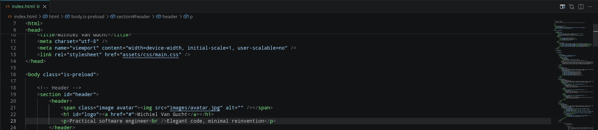
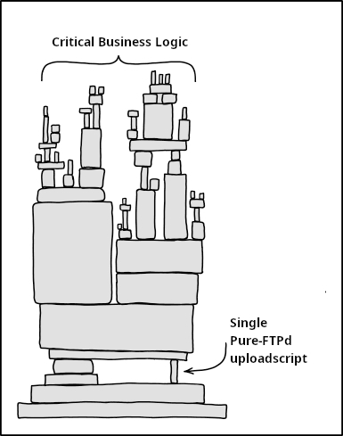

Azure Migration Success
Played an integral role in migrating a client’s proprietary Angular, React, and .NET tools from on-premises to Azure, ensuring a smooth transition and operational success.
Practical software engineer
Elegant code

Curiosity meets structure
Creativity and discipline don’t have to conflict — I’m living proof. My curiosity drives me to explore new ideas and fast-paced challenges, while my focus keeps me grounded to deliver high-quality results and see projects through to completion. I work independently, always centered on the mission and outcomes.
Leadership with empathy
As a manager, I lead with a clear vision and a commitment to listen actively. For me, leadership means putting people first — understanding their needs before focusing on results. I strive to be a guide and reference point, helping teams navigate toward future success.
Adaptable and growth-focused
I thrive across cultures and environments, adapting to fit the team and situation. I have a strong aptitude for learning, whether from advice or my own research, and I’m always seeking to grow and improve.
Strengths I bring
• Building real, meaningful relationships
• Conceptual problem-solving and proactive thinking
• Tenacity and resilience in the face of challenges
• Discernment based on facts and thoughtful judgment
• Energetic responsiveness with a sense of urgency
I focus on building practical, maintainable software solutions, leveraging existing frameworks where possible, and delivering high-quality results. Here are some areas where I excel:
Some of my work, from high-impact results to creative experiments
Played an integral role in migrating a client’s proprietary Angular, React, and .NET tools from on-premises to Azure, ensuring a smooth transition and operational success.

Refactored a single company-wide ETL script into individual Linux scripts for each business unit, triggered automatically by (S)FTP uploads. This improved reliability so that issues in one script no longer affected the entire data flow.
Built a fully offline version of an API with an OpenStreetMap server to showcase our e-shop plugins at a trade fair without internet access. This project demonstrated my ability to design practical, self-contained solutions and got me into a professional development team.